Olympics Companion App
A dual-screen Olympic viewing experience that engages kids through gamified interactions, trivia, and live athlete overlays.

A dual-screen Olympic viewing experience that engages kids through gamified interactions, trivia, and live athlete overlays.
Despite the Olympics' global appeal, young viewers consistently struggle to engage with Olympic broadcasts, especially when it comes to lesser-known sports with complex or unfamiliar rules. Traditional, passive TV formats do not resonate with children who are used to interactive, dynamic digital experiences such as games and apps.
This results in reduced interest, confusion, and missed educational opportunities for young audiences. Parents also express concern about overstimulation and the developmental impact of extended, unengaging screen time.
There is a clear need for engaging, interactive, and educational solutions that bridge the understanding gap for young viewers, making Olympic broadcasts not just more accessible, but also supportive of children’s well-being and learning.
Research Appendix → Usability Testing Appendix → Final Visual Report
A multi-method approach to uncover insights about how kids engage with Olympic broadcasts.
These guiding questions shaped our investigation into how young audiences interact with Olympic content and what design interventions can improve their experience:
To support the problem space, I conducted an online ethnography using community insights from Reddit and Quora. These platforms offered unfiltered perspectives from parents and general users about why children struggle to engage with sports broadcasts.
A Reddit user highlighted the impact of traditional TV on young viewers, emphasizing overstimulation, reduced social interaction, and diminished learning time. This insight points to the need for more mindful, balanced digital experiences.

On Quora, users shared how children often feel frustrated by the lack of interactivity in sports broadcasts. Compared to video games where they have agency, TV makes them passive observers, which limits engagement and emotional connection.

To complement our ethnographic insights, we reviewed research articles and opinion pieces that explore how interactive features can support children's engagement with sports and the Olympics. These articles reinforce our problem scenario by showing how participation, emotional connection, and interactivity improve learning and retention for young viewers.
This article highlights how features like live stats, fan polls, and discussions enhance broadcasts by making them more engaging and participatory. These tools help bridge the gap between passive viewing and active interaction, especially effective for kids raised on interactive platforms.
This research explores how characters directly asking questions and interactive segments improve learning. These features help children retain knowledge and stay engaged, especially when watching unfamiliar or complex content. It strongly supports our aim to use interactive tools during Olympic broadcasts.
This article emphasizes that the Olympics can teach values like heroism, perseverance, and patriotism. Interactive features help translate these values to kids in more accessible ways, improving their emotional connection to the events.
Watching the Olympics has been shown to inspire children to try new sports. In Australia, admiration for athletes drives motivation. This underscores how interactive experiences can amplify inspiration and turn passive watching into active interest.
This article discusses how interactive storytelling can help bridge knowledge gaps and make Olympic values more relatable. With tools that foster emotional understanding, even unfamiliar sports become meaningful.
Competitor analysis was conducted to identify design strategies that successfully engage young audiences with complex sports content. This method helped uncover interactive patterns, accessibility features, and visual techniques used by leading platforms like F1 Kids, NFL on Nickelodeon, and YouTube Kids. These insights informed feature comparisons and UI decisions for our solution.
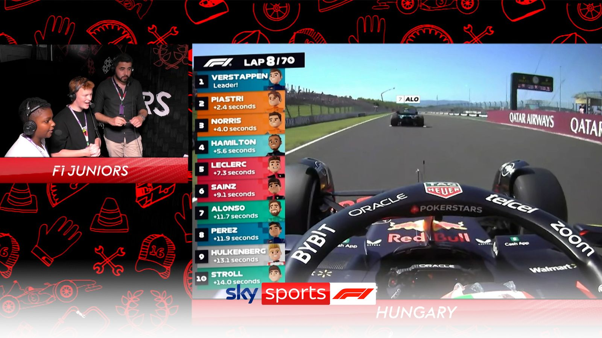
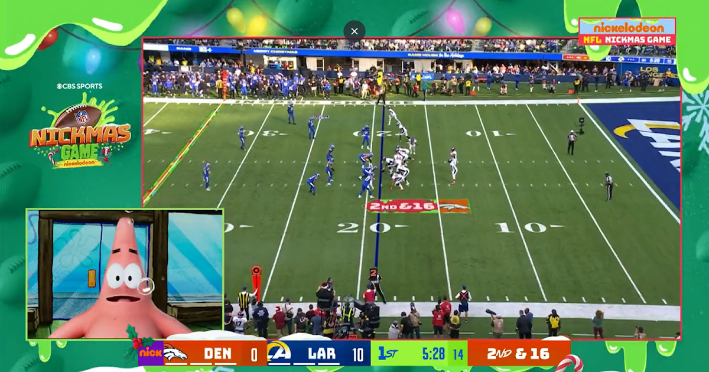
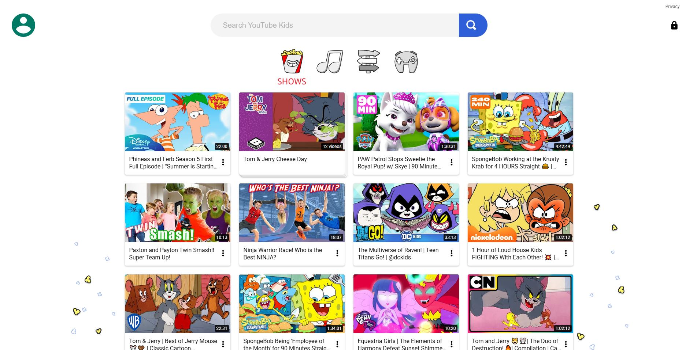
| Feature | F1 Kids | NFL on Nickelodeon | YouTube Kids |
|---|---|---|---|
| Shows most relevant kids sport content | ✓ Only for racing sport | ✓ Only for NFL | ✓ Offers variety via robust search |
| Interactive statistics | ✓ Leaderboard overlay | ✓ Spongebob explains stats | ✗ Little to no interactive stats |
| Real-time rule explanations | ✗ No explanations | ✓ Explained by child actors | ✗ None unless searched |
| Visual aids / infographics | ✓ Cartoon overlays | ✓ AR animations for touchdowns | ✗ Minimal visual aids |
| Child-friendly commentary | ✓ Peer-age commentary | ✓ Voiced by child-familiar characters | ✓ Family-friendly tone |
| Interactive games/quizzes | ✓ Tests F1 physics understanding | ✓ Football position quizzes | ✓ Hands-on games for kids |
| Interactive gameplay demos | ✗ Only real footage | ✗ No interactive demos | ✗ No interactive demos |
| Expert commentary | ✓ Kids commentary + expert insight | ✓ Former players + kids commentary | ✓ Searchable expert commentary |
| User experience | ✗ UX not tailored for kids | ✓ Metaverse-style visual layer | ✓ Intuitive UI/UX for children |
Interviews were selected as a primary research method to gain in-depth insights into children's interactive experiences with digital sports broadcasts, such as the Olympics. By engaging directly with the children, we could explore their thoughts, preferences, and challenges in a conversational manner that allowed for follow-up questions and clarifications.
This method is particularly valuable when studying young users, as it enables the interviewer to adjust questions in real-time based on the child's responses, ensuring that the data collected is both rich and nuanced. Additionally, interviews offer the opportunity to observe non-verbal cues, such as facial expressions and body language, which can provide further context to the responses given.
The use of surveys complements the interviews by allowing for the collection of both behavioural and attitudinal data on a broader scale. The two-section design, with one part aimed at parents and the other at children, ensures a comprehensive understanding of the interaction between young users and digital platforms.
Parents' input on behavioural data, derived from their observations of their children's engagement with broadcasts, provides an external perspective on how these interactions occur in a natural setting. Meanwhile, the children's responses in the attitudinal section offer direct insights into their feelings, preferences, and motivations. Surveys are particularly effective in reaching a larger sample size, enabling the identification of common patterns and trends across different user experiences.
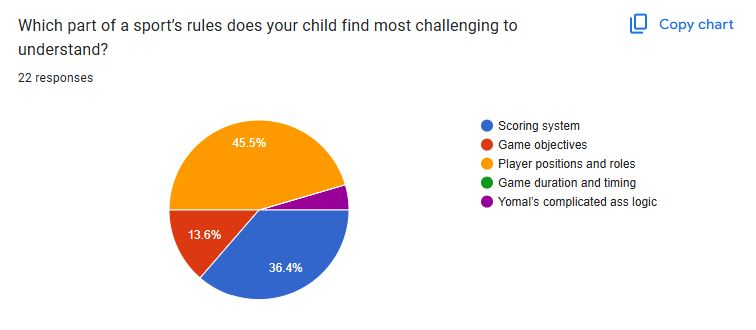
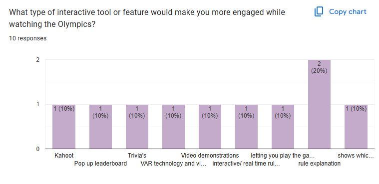
Contextual observation was conducted to assess how children naturally engage with sports content across different platforms. This method revealed non-verbal confusion, attempts to seek clarity, and moments of positive emotional engagement with specific UI features like overlays or animations. Observations were logged across platforms such as Olympics.com, YouTube Kids, and F1/NFL streams.
| User Goal / Task | Interface Example | Kid 1 Behaviour | Kid 2 Behaviour | Kid 3 Behaviour | Kid 4 Behaviour |
|---|---|---|---|---|---|
| Olympics 2024 | Olympics Golf Page | Frown, “What does this mean, I’m so confused.” Interface lacks clarity, causing immediate confusion. |
“Let me google the rules first.” User needed external help due to missing in-platform guidance. |
“Is it the least amount of hits to win the game?” Interpretation: Indicates basic scoring logic was unclear. |
“What does birdie and bogey mean?” Interpretation: Unfamiliar terminology made it hard to follow. |
| Watch Golf Final Round | Olympics Golf | Confused watching golf. Interpretation: Needs rule clarity. |
Used tablet to search rules. Interpretation: Info not easily available. |
Unsure of rules/scoring system. Interpretation: No visual explanation or overlays resulted in confusion. |
“I like the highlights and range of sports.” Interpretation: Terminology is foreign. |
| Watch F1 Kids | YouTube | “I like the statistic/leaderboard overlay.” | “None of the games have rule explanations.” Interpretation: No rule guidance leads to confusion. |
“Cartoon and animated characters are cool.” Interpretation: Gamified aesthetics increased interest and accessibility. |
“I like the child-friendly commentary.” Interpretation: Tailored language helped understanding. |
| Watch NFL on Nickelodeon | YouTube | “I’m not into rugby, I wanna watch basketball.” Interpretation: Sport mismatch. |
“SpongeBob! I like the 3D animation overlay.” Interpretation: Familiar characters and effects kept attention. |
“That’s Young Sheldon.” Interpretation: Familiar actors helped engagement. |
“The colours are so cool.” Interpretation: Metaverse effects aid enjoyment. |
To synthesize qualitative findings from interviews, surveys, and contextual observations, we created an affinity diagram using a color-coded system for clarity and traceability.
This technique allowed us to cluster and visually connect recurring insights while making it easy to trace every theme back to its research source.
View the complete version of this affinity diagram along with the remaining four
Understanding user personas helped us identify core needs and design challenges across both children and parents. These personas guided feature choices and ensured our solution remained user-centered throughout the design process.
Parent Persona: We created Ben’s persona using insights from interviews and Section 1 of the survey, which focused on parents’ behavioural observations of their children’s Olympic viewing. This approach provided an external perspective on how kids engage with broadcasts in real-life settings, revealing common challenges and pain points.
Kid Personas: Ella and Liam’s personas were shaped by both interviews and Section 2 of the survey, which captured children’s own attitudes, motivations, and preferences. By combining attitudinal survey responses with in-depth interviews, we gained a richer, more authentic understanding of young users’ needs, helping us design solutions that truly resonate with them.
Using both methods ensured a comprehensive view of the parent-child dynamic, and allowed us to identify patterns and trends across a broader sample.
To deepen our understanding of pain points and opportunities at each stage of Olympic broadcast engagement, we mapped user journeys for all three core personas.
Each journey map is structured into clear phases that reflect the real sequence of interactions, from initial viewing to post-broadcast reflection. For every phase, we charted actions, thoughts, and emotions to capture the user’s perspective, along with specific pain points and opportunities for improvement.
This framework was shaped by insights from interviews and surveys, ensuring we captured both the behavioral flow and underlying motivations. By visualizing emotion trajectories and aligning them with concrete user feedback, the journey maps reveal not only where users struggle but also where meaningful intervention can create delight.
This synthesis process ensures that our design solutions directly address real user challenges and provide targeted improvements for each unique user type.


These storyboards bring to life the real user experiences uncovered during our research, tracing the Olympic broadcast journey for all three core personas—Ben (Parent), Ella (Kid), and Liam (Kid). Each sequence was mapped directly from our user journey maps, capturing key moments of engagement, confusion, and learning across different household roles.
By visualizing these scenarios, we highlight pain points (such as confusing rules or lack of accessible explanations), emotional reactions (like frustration, boredom, or curiosity), and opportunities for delight and improvement (including social learning and self-driven exploration).
The storyboard format allows us to see not just what users do, but how they feel and adapt at every step—from initial discovery to sharing knowledge with peers. This method helps us empathize with both parental guidance needs and children’s learning preferences, ensuring our design solutions are user-centered, relevant, and grounded in real behavioral insights.
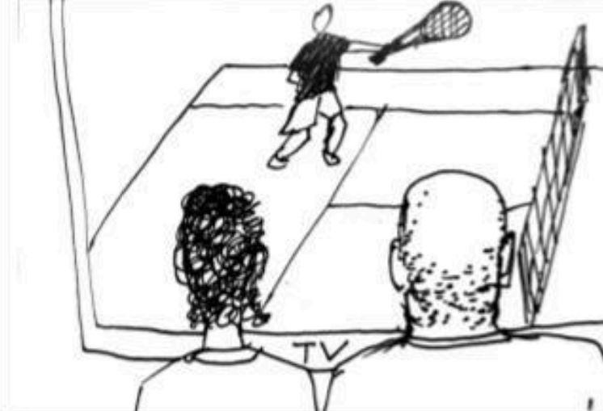
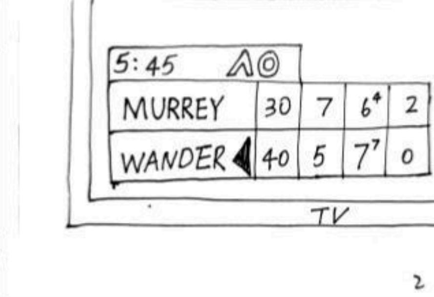
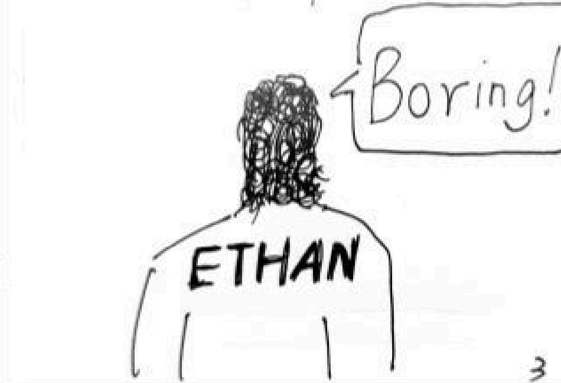
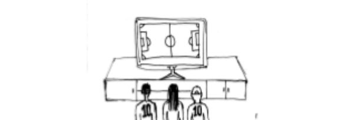
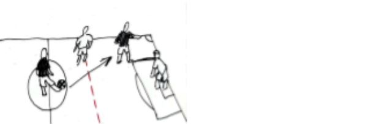
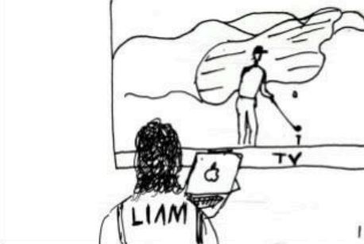
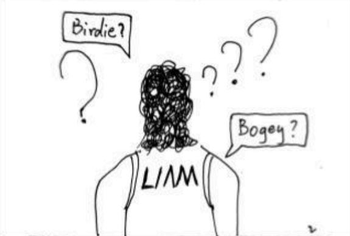
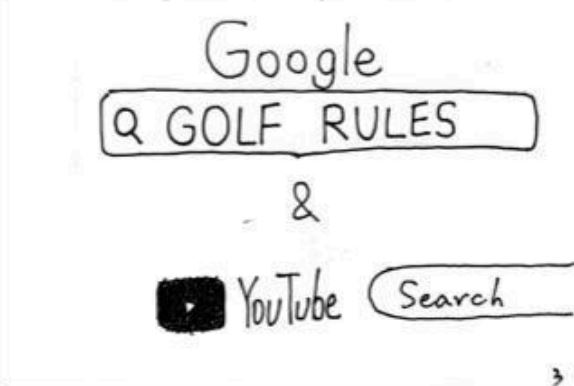
This section covers usability testing conducted on mid-fidelity wireframes (basic layouts) and hi-fidelity mockups (detailed, polished designs) to evaluate user experience and functionality.
To generate innovative solutions, all three group members independently created paper-based brainstorms for potential solutions to the Olympics engagement problem.
These diverse brainstorms offered unique perspectives and features, setting the foundation for our group discussion and ideation process.